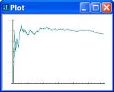
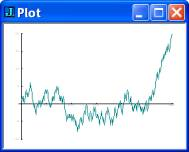

Discovering Array Languages
Vector 22:3, page 13
APL? That’s the language with all the funny symbols, isn’t it?” “J? What a funny name for a language!” “What’s so special about APL [or J]? Why not use BASIC [or C++ or Java or ...]?” We’ve all heard remarks such as these, spoken with various degrees of doubt, sarcasm or even derision. In this paper we shall try to provide answers to these questions in a simple manner in a way which might encourage the reader to seek further information about APL or J.
In addition to answering the sceptics, there is another reason why we should take the time to describe in simple language what we are doing. I believe we have an obligation to explain to people how we spend our professional lives. We owe this to our family and friends whom we on occasion may neglect when we become preoccupied with our work. We also have an obligation to others who support us directly and indirectly and who may often wonder what they are getting in return.
When we attempt to explain our work in simple non-technical language, we are in excellent company. The physicist and Nobel laureate Erwin Schrödinger in a series of public lectures which were published in the early 1950s as Science and Humanism said that “If you cannot – in the long run – tell everyone what you have been doing, your doing has been worthless.”Another physicist and Nobel laureate, Ernest Rutherford, expressed the same belief somewhat more prosaically in his remark that “[Y]ou have not understood something unless you can explain it in terms that can be understood by an English barmaid.”
We shall begin with a simple metaphor for classifying programming languages and follow this with examples of programming a simple example in both a hypothetical, but we hope representative, machine language and in BASIC which we will consider representative of a conventional programming language. We shall then discuss the origins of APL and J, illustrate their use with the same example as previously used, discuss the acceptance of these languages in the programming community, and discuss a few applications which may be of general interest and even of some utility. Then we compare the teaching of natural languages and the teaching of programming languages, and finally discuss the importance of keeping a historical perspective on one’s work. Two Appendices give the J programs for the machine-language simulator and the applications.
Selecting Apples – a Metaphor¶
Frederick Brooks, a colleague of Kenneth Iverson whom we shall soon introduce as the originator of APL and J, has given a nice analogy of the difference between a conventional language such as BASIC and an array language such as APL or J. Suppose we have a box of apples from which we wish to select all of the good apples. Not wishing to do the task ourselves, we write a list of instructions to be carried out by a helper. The instructions corresponding to a conventional language would be something like the following:
Reserve a place for the good apples. Then select an apple from the box, and if it is good put it in a reserved place. Select a second apple, and if it is good put it too in the reserved place. ... Continue in this manner examining each apple in turn until all of the good apples have been selected.
On the other hand the instructions corresponding to an array language would be simply
Select all of the good apples from the box.
Of course, the apples would still have to be examined individually but the apple-by-apple details would be left to the helper.
Based on the above analogy we may classify programming languages as follows:
-
One-apple-at-a-time languages
Fortran, BASIC, Pascal, C++, ..., Java, ...
-
All-the-apples-at-once languages
..., APL, ..., J, ...
-
Other languages
Spreadsheets, application packages, ...
Conventional Languages¶
A program for any of the early computers had to be written in so-called machine langage – different for each model of computer – and consisting of a sequence of instructions written in numerical form, each specifying the operation and the addresses (locations) in memory of the numbers to be operated on and the addresses of the result. For example, for the first computer I used, the National Cash Register 102A, the instruction 35 2001 1025 1050 meant “Add the number in location 2001 to the number in location 1025 and put the sum in location 1050.” As another example, the instruction 33 0345 0656 0273 meant “If the number in location 0345 is greater than the number in location 0656, take the next instruction from location 0273; otherwise take the next instruction in sequence.” A program consisted of a sequence of these numerical instructions, and was executed starting with the first instruction and proceeding sequentially instruction-by-instruction unless the sequence was changed by a transfer-of-control instruction or a Stop instruction was encountered. Programs for real problems often consisted of hundreds or thousands of lines of such code, and might take weeks or even months to write and debug.
To illustrate a machine-language program we shall consider a hypothetical computer almost identical to that given in Electronic Computers, Revised Edition by S. H. Hollingdale and G. C. Tootill (Penguin, 1971). The memory consists of an arbitrary number less than or equal to 999 of locations or “words” numbered sequentially 000, 001, 002, ..., and an additional word of memory, called the “Accumulator” and represented by A, where arithmetic and logical operations are performed. An instruction is a five-digit integer with the first two digits giving the operation and the last three the address. For example, the instruction 02025 means subtract the number in location 025 from the number in the Accumulator and store the result in the Accumulator, and the instruction 09176 means take the next instruction from location 176 if the number in the Accumulator is negative. Data are considered input one number at a time from paper tape, and output is printed one number at a time.
The complete order code is as follows, where (xxx) and (A) represent the contents of location xxx and A, respectively:
| 01xxxA ← A + (xxx) | 06xxxPrint (xxx) | ||
| 02xxxA ← A – (xxx) | 07xxxxxx ← (A) | ||
| 03xxxA ← A × (xxx) | 08xxx | Read no. from tape into xxx | |
| 04xxxA ← A % (xxx) | 09xxx | ||
| 05xxxA ← (xxx) | 10000 | Stop | |
| 11xxx | Next instr. from xxx |
The last instruction which transfers control unconditionally to the specified address has been added to the instruction set given in Hollingdale and Tootill.
As an example the following is a program for reading a list of non-negative numbers one at a time from paper tape and calculating and printing the maximum number:
The program is stored in memory locations 100, 101, ..., 112. Execution of the program begins with the instruction 05112 in location 100. The input consists of a list of non-negative numbers appended with an arbitrary negative number which serves as a flag to the program indicating that all valid numbers have been processed.
Since a program in this form is difficult if not impossible to read, programs are written and annotated as shown below with the location of an instruction being given to its left and an explanatory note to its right:
| 100 | 05114 | ) Set maximum no. Xmax to 0 | |
| 101 | 02114 | ) | |
| 102 | 07114 | ) | |
| 103 | 08115 | Read no. X from tape | |
| 104 | 05115 | Copy X to Accum. | |
| 105 | 09112 | Is X < 0? | |
| 106 | 07115 | ) X - Xmax | |
| 107 | 02114 | ) | |
| 108 | 09103 | Is X – Xmax <0? | |
| 109 | 05115 | ) Replace X with Xmax | |
| 110 | 07114 | ) | |
| 111 | 11103 | Next insruction from locn. 103 | |
| 112 | 06114 | Print Xmax | |
| 113 | 10000 | Stop |
This program is a “one-apple-at-a-time” program since each number has to be compared in turn with the current maximum, set initially to zero, which it replaces if it is larger.
A breakthrough in programming came in the late 1950s with the development by the International Business Machines Corporation of Fortran, for Formula Translation, which allowed the programmer to write programs in an algebraic-like language. Since its release in 1957 many versions of Fortran were developed and the language has had a profound effect on the the development of programming languages and their teaching. The appearance of Fortran made the use of computers feasible for people who did not wish to become full-time programmers at the expense of their chosen professions.
In 1964 BASIC, for Beginner’s All Purpose Instruction Code, was first released at Dartmouth College, a liberal arts college in New Hampshire. It was designed as a “pleasant and friendly” alternative to Fortran for undergraduate students, most of whom were in the social sciences and the humanities. The first BASIC program was run successfully at 4:00 a.m. on May 1, 1964, and performed the calculation (7 × 8) ÷ 3. Since then there have been very many versions of BASIC and the language has become a lingua franca in computing. The following is a BASIC program for the example problem of finding the maximum of a list of positive numbers:
REM Maximum of a list of numbers
DATA 19.11, 12.77, 21.31, 16.10, 12.19, 25.76, 17.49, -1
Max = 0
READ Number
WHILE Number >= 0
IF Number > Max THEN
Max = Number
END IF
READ Number
WEND
PRINT Max
STOP
END
This program, like the machine-language program given earlier in the section, is also a one-apple-at-a-time program since each number must be examined in turn and the current maximum updated if necessary. However the BASIC program is much easier to write and can probably be understood by a person with little or no knowledge of the language.
Array Languages – APL¶
APL had its origins in work begun by Kenneth Iverson – a Canadian who was born near Camrose, Alberta and who was a graduate of Queen’s University, Kingston – while a graduate student at Harvard in the early 1950s. He became dissatisfied with the inadequacies of conventional mathematical notation and began to develop an alternative notation. After completing his doctorate, he continued to develop his ideas while teaching in the newly established program in Automatic Data Processing at Harvard. Its first applications were for the description of algorithms arising in problems of sorting, searching and optimization.
After leaving Harvard in 1960, Ken joined the IBM Research Division in Yorktown Heights, New York where he continued this work. In 1962 he published a detailed account in his book A Programming Language, the title being the source of the name APL. The first experimental computer implementation was in 1965 and was used in a batch mode by submitting decks of punched cards containing programs and data. In November 1966 the APL\360 system running on an IBM/360 Model 50 was providing service to users in the IBM Research Division in Yorktown Heights and could be used interactively from remote terminals. APL became publicly available in 1968.
The principles underlying the design of APL have been simplicity, brevity and generality. While the conventions of mathematical notation have been respected, these principles have always been given precedence. The data objects in APL are one-dimensional lists, two-dimensional tables, and in general rectangular arrays of arbitrary dimension. In addition to the usual elementary arithmetical functions of addition, subtraction, multiplication, division and raising to a power, there are a large number of additional functions which are defined for arrays as well as for individual numbers.
As a first example consider the data given in the previous BASIC program which represent the totals of several grocery shopping trips. These amounts may be defined by the simple APL statement
The sum of these numbers is given by +/TOTALS which has the value 124.73. The APL function +/ may be considered analogous to the familiar sigma symbol S of conventional mathematical notation. The only extension of this concept in conventional notation is the symbol P for product. However, in APL the operator / may be applied to a large number of arithmetic and logical functions. For example, ⌈/TOTALS or 25.76 is the largest item of TOTALS, ⌊/TOTALS or 12.77 is the smallest item, and ⍴TOTALS or 7 is the number of items. We note that the expression
⌈/19.11 12.77 21.31 16.1 12.19 25.76 17.49
is equivalent to the machine-language and BASIC programs of the last section. (The product is given by ×/TOTALS although it is difficult to think of a meaningful interpretation of this value for the present data.)
As a further example of array operations in APL we shall consider the prices and number of units purchased for each of the items for the sixth shopping trip. A single multiplication of the list of prices by the list of quantities will give a list of the total amount spent for each item, and one summation of this list will give the total amount spent. If the prices and units purchased are represented by PRICE and QTY respectively, then these calculations may be expressed in APL as follows:
PRICE ← 0.40 4.25 8.99 1.99 0.40 2.69
QTY ← 3 2 1 2 1 1
PRICE × QTY
1.2 8.5 8.99 3.98 0.4 2.69
+/PRICE × QTY
25.76
TOTAL ← +/PRICE × QTY
TOTAL
25.76
As APL is an interactive language, these expressions are immediately executed and the results displayed when entered at the keyboard, where expressions entered by the user are indented while responses by the APL system are not.
As an example of how APL functions and operations may be extended to arrays of higher dimensions, consider finding the frequencies of occurrence of each of the six faces when a die is rolled a number of times. Suppose
is a list of the results of rolling a die 15 times and FACES is the list of the first 6 positive integers. Then the expression FACES ∘.= ROLLS gives the table
0 0 0 1 0 0 0 0 0 0 0 0 0 0 0
0 0 1 0 0 1 0 0 0 1 0 0 0 0 0
0 0 0 0 0 0 0 0 1 0 1 1 1 1 1
1 0 0 0 1 0 1 1 0 0 0 0 0 0 0
0 1 0 0 0 0 0 0 0 0 0 0 0 0 0
0 0 0 0 0 0 0 0 0 0 0 0 0 0 0
where the second row for example shows that a 2 occurred on the third, sixth and tenth rolls. and +/FACES ∘.= ROLLS gives the row sums 1 3 6 4 1 0 of the required frequencies. These expressions make use of the “outer product” ∘. , a generalization of the familiar addition table of elementary arithmetic, so that for example if I is a list of the first twelve positive integers then I∘.+I is a twelve-by-twelve addition table.
Array languages – J¶
In 1980 Ken Iverson left IBM and returned to Canada to work for I. P. Sharp Associates, a firm with head offices in Toronto which was using APL to establish a time-sharing service that became widely used in Canada, the United States and Europe. In 1987 he retired from I. P. Sharp, or to use his words “When I retired from paid employment...”, and turned his attention to the development and promotion of a modern dialect of APL called simply J.
Ken’s motivation for developing J was to provide a tool for writing about and teaching a variety of mathematical topics that was available either free or for a nominal charge, could be easily printed, was implemented in a number of different computing environments, and maintained the simplicity and generality of APL. J was first implemented in 1990 and has undergone continuous development since then. It is now available on a wide range of computers and operating systems and utilizes the latest developments in software including graphical user interfaces such as MS Windows.
The most obvious difference between APL and J is the use of the ASCII character set available on all keyboards. This removes the many difficulties associated with the APL character set, difficulties only exacerbated by the increased use of text-based email and the World Wide Web. As an illustration the following are the J equivalents of the three APL statements given earlier in the shopping example:
The J equivalent of the APL expression in the dice-throwing example is +/"1 Faces =/ Rolls where / is the adverb “table”.
Although there are many differences between APL and J that make J a simpler and more satisfying language to use, we shall mention only one, and this is the use of terminology from natural language rather than from computing technology. For example, what are termed functions in most languages are called verbs in J, operators are called adverbs since they modify verbs, and the variables of almost all languages are termed nouns in J. (There are even gerunds in J!) This simple change gives a unity to the various elements in the structure of J and also suggests that there may be an affinity between programming languages and natural languages. We shall return to this topic in a later section.
An assessment of APL and J¶
After APL was released outside of IBM, it soon gained many enthusiastic users in business, industry and academia and was used for a wide range of applications. Soon there were several slightly differing versions of APL originating from different organizations, and successive releases contained both enhancements to the language resulting from experience with its use and also improvements which simplified its use on the computer. J had an enthusiastic reception both from users of APL and from new users. However the design and implementation of J has been strictly controlled by Jsoftware Inc., a company of which Ken Iverson was one of the original founders.
Both APL and J have had, and continue to have, a large number of critics. Many objected to the unusual character set in APL, and as we noted earlier would refer derisively to APL as “that language with all the funny symbols”. Many persons, with some justification, criticized the tendency of many APL users to write programs in as few statements as possible, the ideal being the “one-liner”. Some critics, again with justification, termed APL a “write-only” language implying that APL programs could not be read intelligibly even by those who had written them. Similar criticisms could be, and undoubtedly have been, made about J and its supporters, except of course for the character set which is that used on all English-language keyboards.
I have always considered one of the great virtues of APL and J has been the suppression of the detail required in almost all other programming languages. The advantages of a suitable notation have been long known in mathematics, and have been admirably stated by the English mathematician A. N. Whitehead in An Invitation to Mathematics which first appeared in 1911 as follows: “By relieving the brain of all unnecessary work, a good notation sets it free to concentrate on more advanced problems, and in effect increases the mental power of the race.” This was a favourite quotation of Ken Iverson’s, one which he used in introducing his Turing Award lecture “Notation as a tool of thought”. Another even broader injunction for brevity is given in the apocryphal Ecclesiasticus (c. xxxii, v. 8) where we are instructed to “Let thy speech be short, signifying much in a few words.”
However I also believe that neither APL nor J, or any single programming language or system – and here I include application packages and spreadsheets – can be considered as the solution to all of one’s programming problems. A person selects the language or system best suited for the application being considered although one justifiably has one’s favourites. Just as a gardener has a variety of tools to serve his or her gardening needs, so does a programmer use the most appropriate programming tool for the problem at hand.
The next three sections give a few examples I have used in my statistical work and in classroom presentations. Although I have programmed almost all of them at various times in several different languages, the results given here have been obtained from programs written in J.
Analyzing Data¶
In this section we shall consider briefly a type of calculation that is fundamental to a large class of statistical applications. The data have been taken from Principles and Procedures of Statistics by R. G. D. Steel and J. H. Torrie (McGraw-Hill, 1960). In a single dimension the calculation involves finding the sum of data arranged simply as a list of numbers. In two dimensions with the data arranged in rows and columns it is required to find the row and column sums of the data. The calculation may be generalized to three or more dimensions where it is required to find some or all of the so-called marginal sums.
As an example consider some data representing the yield in bushels per acre for each of two varieties of oats and each of three different seed treatments with four replications of each variety-treatment combination. To begin, consider the four observations
for the first variety-treatment combination. There are the observations themselves and also their sum 215.7 which is a measure of the effectiveness of this particular combination.
Now consider the three treatments for the first variety which are given by the two-dimensional array
with the rows representing treatments and the columns representing replications. There are now four different quantities to calculate: the observations themselves, the row sums
which give a measure of the effectiveness of each of the three treatments, the column sums
which measure the variability between the replications, and the overall sum 644.7 which gives a measure of the yield of the first variety of oats.
If we now consider the second variety of oats, we have the data arranged in the three-dimensional array which may be represented in two-dimensions as
62.3 58.5 44.6 50.3
63.4 50.4 45.0 46.7
64.5 46.1 62.6 50.3
75.4 65.6 54.0 52.7
70.3 67.3 57.6 58.5
68.8 65.3 45.6 51.0
which has 2 levels each with 3 rows and 4 columns with the levels representing the varieties and the rows and columns representing treatments and replications, respectively. If we count the array itself and the total over all of the data, there will be 23 or 8 different marginal sums to compute. For example, the sum over the levels
measures the yields of varieties for both treatments and replications, and the sum over both levels and replications,
measures the treatments. If this experiment were repeated for two or more methods of cultivation, then the data would be represented as a four-dimensional array and there would be a total of 24 or 16 different sums that could be computed. The inclusion of a fifth factor, for example, the repetition of the experiment at a different location where the soil was different, would give 32 marginal sums.
We shall make only a very few remarks about the use of J to find marginal sums. If the four observations for the first variety-treatment combination are represented by A1, then the marginal sums giving the total of these observations is simply +/A1. If A2represents the three-by-four array for the three treatments and four replications for the first variety, then the treatment totals are the row sums +/"1 A1, the replication totals are the column sums +/A1, and the grand total is +/+/A1.
Once the marginal sums, or at least an appropriate selection of them depending on the experimental design, have been computed, it is relatively simple – and we must emphasize the word “relatively” – to find the necessary components of the total variation to test whatever statistical hypotheses are of interest. The calculations for the marginal sums have been incorporated into general statistical programs written in all three array languages discussed here and have proven to be a considerable usefulness.
Rolling Dice and other Simulations¶
The rolling of dice, the tossing of coins, and the drawing of balls randomly from an urn have long been used to provide examples of statistical distributions and sampling procedures. Data could be generated by carrying out the experiments with real dice, coins, balls or marked slips of paper. Alternatively the experiments could be simulated using tables of random numbers, a common feature of statistical tables for many years. For example, a sequence of digits selected arbitrarily from a random number table could represent a sequence of coin tosses with an even digit representing a head and an odd digit a tail. There were even books of tables of random numbers, one being the RAND Corporation’s A Million Random Digits with 100 000 Normal Deviates published in 1955 which was reviewed with some disbelief in The New York Times. In this section we will mention a couple of simulations often referred to in the statistical literature and give a few examples of our own.
Possibly one of the best-known examples in the statistical literature are the experiments of the English biologist W. F. R. Weldon (1860 – 1906) which he carried out to illustrate some of his statistical arguments. In one experiment he tabulated the results of rolling twelve dice 4096 times counting as a success the number of occurrences of a 4, 5 or 6 on each roll. Another set of dice data not as well known as Weldon’s was generated by a Swiss scientist Rudolf Wolf who tabulated the results of 100,000 rolls of a die. A fairly recent analysis of these latter results showed that the die was certainly biased. The author of this study remarked that it is reasonable to assume that a die of poor quality such as would have been manufactured in the nineteenth century would have developed a bias when rolled such a large number of times. He then remarked that dice now used in major gambling houses are machined to tolerances of 1/2000 of an inch, are made from a hard homogeneous material and are rolled only a few hundred times before being discarded. Using J a simulation of Weldon’s example took approximately 0.05 seconds and Wolf’s approximately 0.13 seconds.

It is well known that the ratio of the number of heads to the total number of tosses of an unbiased coin approaches 0.5 as the number of tosses increases. An example is shown in the first graph giving the results of one simulation of 300 tosses. However, the cumulative excess in heads over tails tends to grow as the number of tosses increases. This is shown in the second graph representing the same simulation as that in the first one. Thus if one were to bet on the outcome of heads on each toss it is not altogether certain that one would necessarily break even in a long series of tosses since one’s capital, if modest, could be wiped out by a long run of tails. This is especially true if one were using a martingale system of betting where one doubles one’s bet on each loss and reverts only to the original bet on a win.
A well-known example of a random process that is given in many statistics texts is Buffon’s needle problem for estimating the value of p, the ratio of the circumference of a circle to its diameter. It was proposed by the French naturalist and biologist Comte de Buffon in 1760. Suppose we rule a series of parallel lines on a flat surface such as a table top and repeatedly drop at random on this surface a needle whose length is less than the distance between adjacent lines. By counting the number of times the needle crosses a line when it falls it is possible to estimate the value p. One trial of this procedure in which a needle was dropped 5000 times is reported to have given an approximation to p of 3.15956. A discussion of the simulation of Buffon’s problem is given in Computer Approaches to Mathematical Problems Jurg Nievergelt, J. Craig Farrar and Edward M. Reingold (Prentice-Hall, 1974). Five repetitions of this simulation for 5000 trials each gave estimates for p of 3.13185, 3.11526, 3.13381, 3.11042 and 3.11042.
Random methods of estimating p must be considered only a small footnote in the long history of the endeavours – to some very interesting and to others completely useless – to calculate p to an ever-increasing number of digits. Two years ago a team of Japanese scientists used 400 hours of supercomputer time to compute p to 1.24 trillion places. If printed, this number which begins
would extend for almost 20 million miles.
Collecting Coupons¶
One of my favourite statistical examples is one I met first as a graduate student and have used many times both as a classroom example and as a programming exercise. Indeed, about a dozen years ago I wrote a four-page brochure using it to introduce the J language. It is known as the coupon collector’s problem, and has its application in the repeated purchase of some product such as breakfast cereal until a complete set of prizes, contained one in each box, is obtained. We are interested in knowing how many boxes of cereal must be purchased on the average until we have all of the prizes.
We may simplify the problem by eliminating the cereal boxes – and the cost of purchasing them and the bother of eating the cereal – by imagining that we have a box containing a number of slips of paper each with one of the integers 1, 2, ... written on it, one slip for each different prize. For example, if there are five prizes in the cereal boxes, then our simplified model would be a box with five slips bearing the integers 1, 2, 3, 4 and 5. Instead of purchasing the cereal, we would repeatedly draw a slip from the box, write down the number on it, replace the slip in the box, and continue until all of the five different numbers appeared in our list. If there were six different prizes in the cereal boxes, we could use an even simpler model than drawing numbered slips by rolling an unbiased die repeatedly until all six different faces had appeared.
A statistician would call the above processes – whether the purchase of boxes of cereal or drawing numbered slips of paper – random sampling with replacement. He or she would then state the general problem as follows: If we sample with replacement from the first n positive integers, what is the expected sample size required to obtain all n integers in the sample? A little mathematics, which we shall omit, shows that the expected sample size is simply
n × (1 + 1/2 + 1/3 + ... + 1/n) ,
or in words “n times the sum of the reciprocals of the first n positive integers”. For example, if n = 5 corresponding to five different prizes, then the expected sample size is
5 × (1 + 1/2 + 1/3 + 1/4 + 1/5)
which is equal to approximately 11.4. If n = 6 corresponding to the analogy of rolling a die, then the expected sample size is
6 × (1 + 1/2 + 1/3 + 1/4 + 1/5 + 1/6)
or approximately 14.7. Finally if there were 100 different prizes, then the average number of purchases would be approximately 518.7.
The general formula gives reasonable results for limiting small values of n. If there is only one prize, then n = 1 and the expected sample size is 1 × 1 or 1 which is reasonable since the single prize would be obtained on the first purchase. If there are no prizes, then n = 0 and the expected sample size is 0 × 0 or 0 and there would be no purchases to make.
The following table gives for a small range of values of number of prizes in the first row the expected sample sizes rounded to the nearest integer in the second row:
So far we have considered only the average number of purchases required to collect a complete set of prizes. We might well ask what amount of variation about this average value may we expect. This question could be answered very simply by using a computer to simulate the sampling process a number of times and recording the size of each sample. As an example, 20 simulations for 5 different prizes gave sample sizes of
with a minimum of 5, a maximum of 28, and an average of 13. Another 20 simulations gave a minimum and a maximum of 7 and 26, respectively, and again an average of 13.
I thought I would see what examples of the coupon collector’s problem could be found with today’s cereals. Sadly the problem seems to have fallen out of fashion. Most brands of cereal offered no free prizes although one offered a free watch and another a “Free Inside Outside Camera”, a phrase which required some parsing to make sense. Just as I was about to give up I found a box advertising on the front a “Free Inside Kidz Counter” described on the back as follows: “Hey kids your mission is to walk an extra 2000 steps a day for 2 weeks, that’s about 20 minutes more activity a day, ...”. The “kidz counter” was a pedometer that measured the number of steps only and came in three different colours. Thus if one wanted to collect all three colours the expected number of packages of cereal to be purchased could be found to be 3 × (1 +1/2 + 1/3) or approximately 5.5.
Teaching Languages¶
Most texts used in introductory computing courses give either an introduction to whatever language is currently in fashion or an overview of computing science in which programming is treated somewhat briefly. The programming examples and exercises are carefully and often meticulously presented with the purpose of illustrating the syntax of the language. While many of the problems may have some intrinsic interest, when viewed together they present no continuous narrative which the student can see developing. Unfortunately in some texts many of the examples are artificial or even juvenile. An example in one C++ text was a program that gave a prompt for the user to input a “favourite” number and gave the response I think that [whatever number was input] is a nice number. One Java text has as an example a program to print either ho-ho, he-he or ha-ha which was then modified to print yuk-yuk. One programming assignment I have seen required the student to prepare a table of n7 and 7n for a range of values of n, an exercise of little interest and of doubtful application. Examples such as these undoubtedly prompted a colleague to remark that most introductory programming courses were as interesting as courses in the conjugation of verbs.
It is of interest to compare such approaches to teaching programming languages with the teaching of natural languages. We shall give two examples, one in teaching children to understand and read English, and the second in teaching a foreign language to native speakers of English.
One delightful book intended to introduce English to young children is Richard Scarry’s Storybook Dictionary (Paul Hamlyn, London, 1967), a book I purchased years ago for my young daughter. I now have the pleasure of reading it to her children, much to their own delight as well as to mine. This large format book introduces the child to 2500 words by means of 1000 pictures through the adventures of such colourful characters as Ali Cat, Dingo Dog, Gogo Goat, Hannibal Elephant and Andy Anteater. In the Introduction we are told that “He [presumably girls are included too] will not be given rules. Rather, he will be shown by examples in contexts which completely catch his interest and hold his attention.” If we would only teach programming in the same way!
The second example is related to the teaching of Japanese, a language which I took up shortly after retirement and which I have pursued doggedly for several years. My periods of despair with Japanese – and there have been many – might best be described by the following paraphrase of the well-known epigram of Samuel Johnson: “An elderly gentleman trying to learn Japanese is like a dog walking on its hind legs. He does not learn well, but one is surprised that he learns anything at all.” However there have been many unexpected pleasures resulting directly or indirectly from my study of Japanese. I have met many interesting people both in Canada and in Japan; I have had several delightful trips to Japan; I have eaten a very large number of most enjoyable Japanese meals; and I have gained just a little understanding of the Japanese people and their history. Also I think that I just may have a happier and fuller personal life.
Most of my Japanese texts teach the language by the telling of some continuing story which although fictional is intended to be realistic. In my first text, Japanese for Busy People I (Association for Japanese Language Teaching, Kodansha International, 1984) a prominent figure in most of the reading exercises which begin each chapter is Mr Smith (“Sumisu-san” in Japanese), a lawyer working in Tokyo, and we see him as he meets Japanese colleagues and visits some of them in their homes. In another little book, Conversational Japanese in 7 Days (Etsuko Tsujita and Colin Lloyd, Passport Books, 1991) – the title is not to be believed – we are introduced to the Japanese language and culture as we accompany Dave and Kate Williams as they spend a week as tourists in Japan.
My favourite text is Business Japanese by Michael Jenkins and Lynne Strugnell (NTC Publishing Group, 1993) and is in the well-known English “Teach Yourself Books” series. The story features the Wajima Trading Company in Tokyo and the British company Dando Sports which wants to market its sporting equipment and clothing in Japan through Wajima. We are introduced to various members of the staff at Wajima and learn about the company’s organization and how business operates in Japan. One of the main characters is a Mr Lloyd, marketing manager for Dando, who visits Japan on two occasions. We follow Mr Lloyd as he works with the company and meets some of the staff both at work and socially. Each of the twenty chapters has the same format: a summary of the story so far and another instalment of the story; a list of new vocabulary; grammatical notes; exercises; a short reading exercise; and a one-page essay in English on some aspect of Japanese business. The Japanese hiragana and katakana syllabics are introduced at the beginning and the kanji (Chinese) characters a few at a time starting in Chapter 5, and blend well with the rōmaji (Roman) characters which are also used.
Ken Iverson was motivated, as was mentioned earlier in this article, to develop APL and J because of his concern for the inadequacy of conventional mathematical notation for teaching many of the topics arisng in computing. He would return to this theme frequently in his writings, one example being given in A personal view of APL where he writes that “As stated at the outset, the initial motive for developing APL, was to provide a tool for writing and teaching. Although APL has been exploited mostly in commercial programming, I continue to believe that its most use remains to be exploited: as a simple. precise, executable notation for the teaching of a wide range of subjects.”
Because of their terseness APL and J are ideal tools for exposition, since much of the detail required in conventional computing languages may be omitted. Of course some introduction, however brief, must be given to either language and its interactive use before it may be used. However, such an introduction need not be much more than given in this article with possibly a few remarks on programs (which are “functions” in APL and “verbs” in J). With this simple introduction one can begin an exposition of the desired topic introducing additional features of APL or J as required.
Ken Iverson wrote and lectured unceasingly on the use of first APL and then J for the exposition of a variety of topics. One of his earliest works was APL in Exposition (IBM Philadelphia Scientific Center Technical Report No. 320-3010, 1972), a very small technical report beginning with a short summary of the entire language and followed by short accounts of the use of APL in the teaching of various topics such as elementary algebra, coordinate geometry, finite differences, logic, sets, electrical circuits, and the computer. The last section in just 15 pages presents the logic of a simple computer for executing algebraic expressions, the parsing and compilation of compound expressions, and a program for this computer to generate a sequence of Fibonacci numbers. A contemporary publication was his ALGEBRA: An Algorithmic Treatment (APL Press, 1972) giving a lengthy treatment of variety of topics in algebra. Many publications followed using first APL and then J in the exposition of various mathematical topics. He also published in print and in releases of J and on the J Website at www.jsoftware.com a number of “J companions” intended to supplement well-known texts. A typical one published initially in print form was Concrete Math Companion intended to be read with Concrete Mathematics: A Foundation for Computer Science by R.L. Graham et al. (Addison-Wesley, 1988). One of his projects at the time of his death (on October 19, 2004) was a companion to the encyclopaedic Handbook of Mathematical Functions by M. Abramowitz and I. A. Stegun.
Another very early publication on the use of APL as a notation rather than a programming language was “The Architectural Elegance of Crystals Made Clear by APL” by Donald McIntyre, then Professor of Geology at Pomona College in Claremont, California (Proceedings of an APL Users Conference, I. P. Sharp Associates, Toronto, Ontario, pp. 233 – 250, 1978) which examined the geometry of the atomic structure of crystals using APL. In the Introduction the author states that “... I introduce notation only as needed for the work in hand, minimizing the computer and machine characteristics. Indeed, I do not mention APL to start with, treating the primary functions as natural extensions and revisions of algebra, and I use no APL text.”
Finally we should mention the extensive use of APL and J in the exposition of a variety of topics in probability and statistics and in the development of statistical packages in these languages. The conciseness of either language and its interactive implementation make it ideal for the exposition of statistical concepts in the classroom, further practice in the laboratory, and analyses arising in research. Furthermore statistical packages which may be used with very little knowledge of APL or J may be developed with relatively little effort from the material prepared for classroom and laboratory use.
Remembering our Past¶
There appears to be little opportunity now for our students to become acquainted with the history of computing. Few faculty appear to have much knowledge of, or interest in, the development of the subject. Also the historical consideration of a scientific discipline is probably not popular because it is not considered to be marketable. Introductory computing texts usually have a small amount of historical material often presented in sidebars so as to not interfere with the presentation of topics considered to be more relevant.
And why should we be concerned with our history? A cogent answer has been given by the nineteenth-century Danish philosopher Søren Kierkegaard who said that “Life must be lived forward but understood backward.” With computer technology developing at an increasingly frantic and exciting pace we badly need guideposts for its intelligent and socially responsible application. Perhaps the history of our subject may provide some of the answers. In this section I would like to mention just a few of the books dealing with the history of computing which I have enjoyed.
The first book on computers that I bought was Faster than Thought which was edited by B.V. Bowden (Pitman, 1953), and was subtitled “A Symposium on Digital Computing Machines”. It is a collection of twenty-four papers written by persons who were working in the new field of digital computation, some of whom are now considered to be amongst the great pioneers of computing. The book was reprinted seven times in the first fifteen years after its publication and still makes enjoyable reading. Bowden contributed a Preface and four chapters, the most noteworthy in my opinion being the first, “A Brief History of Computing”, which may be read for the pleasure of its literary style alone.
A little book which I enjoyed reading and which I used in my teaching and research was Hollingdale and Tootill’s Electronic Computers already mentioned in the discussion of machine-language programming. This book contains an excellent account of the history of computing, a discussion of the design of both analogue and digital computers, a treatment of computer programming, and a discussion of various applications of computers. Although much dated now, this book gives an excellent picture of computers and their use in the 1960s and early 1970s. The two chapters on the history of computing still make an excellent but brief intoduction to the subject. It is a pity that a modern version of this admirable little book is not available today. We might note that Professor Hollingdale published Makers of Mathematics (Penguin, 1989) when he was 79 years of age. In the Preface he remarks that he felt no need to include scholarly footnotes and that the references were “limited, with a few exceptions, to sources from my own library which I consulted while writing this book”. A more pleasant way to spend part of one’s retirement is difficult to imagine!
A scholarly but very readable account of the history of computing is A History of Computing Technology by Michael Williams of the University of Calgary (Prentice-Hall, 1985; Second Edition, 1997) which describes the development of arithmetic and calculation tools from ancient Egypt to the IBM/360. This is an excellent introduction to the subject for the more serious reader. Finally I might mention a very recent book, Electronic Brains. Stories from the Dawn of the Computer Age by Mike Hally (Granta Books, 2005). It is based on a BBC Radio Series which was described by one British newspaper as an “... offbeat, informative series [that has] captured the excitement of computing’s early days.” The book is just as entertaining.
Further Reading¶
The Web pages maintained by J Software Inc. at www.jsoftware.com are an excellent source of the current state of J listing several introductions to J which may be downloaded at no charge and information on others available through booksellers. Of the many papers dealing with the development of APL and J the following three, all of which have extensive bibliographies, are to be recommended:
Kenneth E. Iverson, “Notation as a tool of thought”, Communications of the ACM, vol. 23, no. 8, 1980, pp. 444 – 465.
K. E. Iverson, “A personal view of APL,” IBM Systems Journal, vol. 30, no. 4, 1991, pp. 582 – 593.
D. B. McIntyre, “Language as an intellectual tool: From hieroglyphics to APL”, IBM Systems Journal, vol. 30, no. 4, 1991, pp. 554 – 581.
An earlier version of this paper with the title My Life with Array Languages is available on the Web at
www.cs.ualberta.ca/~smillie/Jpage/Jpage.html .
Keith Smillie is Professor Emeritus of Computing Science at the University of Alberta, Edmonton, Alberta T6G 2E8. His email address is smillie@cs.ualberta.ca.
Appendix 1. Machine-language Simulator¶
InstrNames=: 'add';'sub';'mpy';'div';'get';'out';'str';'inp';'trn';'hlt';'jmp'
ht=: 3 : 0
whilst. -. HALT do.
IR=:CR{M NB. Get instruction
CR=: >:CR NB. Increment counter
'OP ADDR'=: 100 1000 #: IR NB. Decode instruction
select. > (<: OP) { InstrNames NB. Execute instruction
case. 'add' do. A=: A + ADDR } M
case. 'sub' do. A=: A - ADDR } M
case. 'mpy' do. A=: A * ADDR } M
case. 'div' do. A=: A % ADDR } M
case. 'get' do. A=: ADDR } M
case. 'out' do. PRINTER=: PRINTER, ADDR } M
case. 'str' do. M=: A ADDR } M
case. 'inp' do. TAPE=: }. TAPE [ M=: ({. TAPE) ADDR } M
case. 'trn' do. if. A < 0 do. CR=: ADDR end.
case. 'hlt' do. HALT=: 1
case. 'jmp' do. CR=: ADDR
end.
end.
empty ''
)
Clear=: 3 : 0
empty M=: 1000$0
)
Load=: 3 : 0
:
empty M=: y. (x.+i.#y.) } M
)
Run=: 4 : 0
CR=: x. NB. Address of first instruction
TAPE=: y. NB. Data tape
PRINTER=: i. A=: IR=: HALT=: 0 NB. Reset registers, etc.
ht ''
)
NB. Maximum
Ex1=: 5114 2114 7114 8115 5115 9112 7115 2114 9103 5115 7114 11103 6114 10000
Tape1=: 19.11 12.77 21.31 16.1 12.19 25.76 17.49 _1
NB. Clear '' NB. Reset memory
NB. 100 Load Ex1 NB. Load program in 100, 101, ...
NB. 100 Run Tape1 NB. Start execution in locn. 100
NB. PRINTER NB. Display maximum
Appendix 2. J Verbs for Applications¶
NB. r=: x name y, where
NB. y is right argument,
NB. x is left argument if any, and
NB. r is result.
NB. Suggested example calculations given in parentheses
NB. Marginal sums
msum=: 4 : '+/^:(+/-.x.)(/:x.)|:y.'
NB. x: dimensions to be summed over
NB. y: array
NB. r: Marginal sum
NB. (A=: >:i. 12, and 1 1 msum A, 0 1 msum A, 1 0 msum A, 0 0 msum A)
NB. Rolling dice
each=: &.>
EACH=: &>
fr=: +/"1 @ (=/)
PolyDice=: [: <"1 [: |: [: >: [: ? ] $ [
NB. Weldon's example
NB. (i. 13) fr +/ EACH (e.&4 5 6 each) 6 PolyDice 12 4096
NB. Wolf's example
NB. +/"1 (>:i.6)=/>:?10000$6
NB. Tossing coins
NB. N=: 300
NB. TossNum=: >: i. N
NB. Heads=: +/\?N$2
NB. Ratio=: Heads % TossNum
NB. Diff=: TossNum - 2*Heads
NB. load 'plot'
NB. plot TossNum;Ratio
NB. TossNum;Diff
NB. Buffon's problem
rand=: (? % ]) @ ($&1e9)
Pi=: (2:*]) % [: +/ [: (</"1) rand ,. [: 1&o. 1.5708&*@rand
NB. y: Number of repetitions (Pi 5000)
NB. Coupon collector's problem
cc=: * +/ @: % @: >: @ i.
NB. y: Number of coupons
NB. r: Expected sample size (cc 5)
ccsim=: 3 : 0
n=. y.
r=. i. 0
while. n > # ~. r do.
r=. r, ?n
end.
>:r
)
NB. y: Number of coupons
NB. r: One simulation (cc 5)